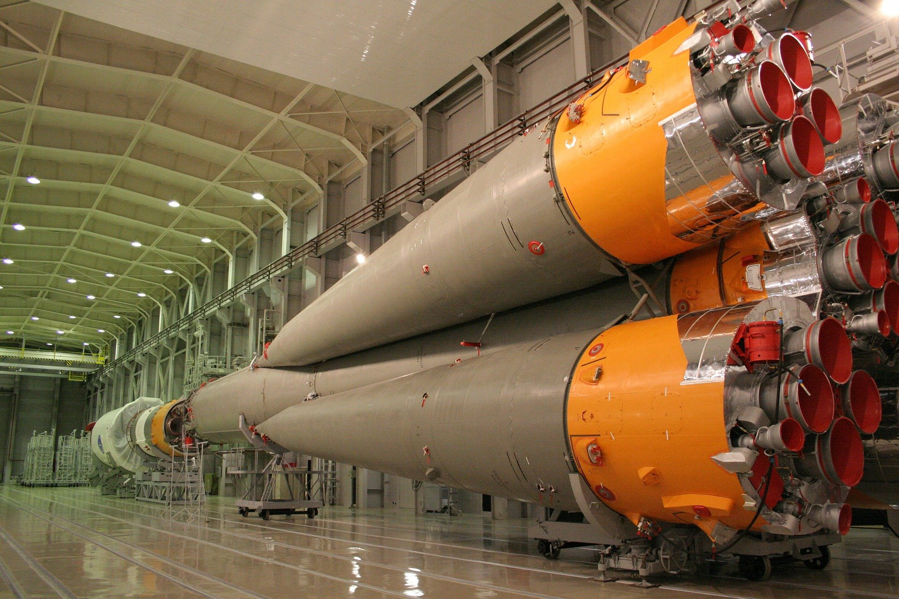

O Falcon 9 lança o Dragon para a Estação Espacial Internacional do Complexo de Lançamento 39A

Primeiro e segundo estágio após a separação de voo

Falcon 9 decola com sua carga útil Iridium-5

Falcon 9 pousando no droneship para ler as instruções

Clone dos motores Merlin do Falcon 9 durante a decolagem

O Falcon 9 deixa um rastro de luz ao decolar da Base Aérea de Vandenberg